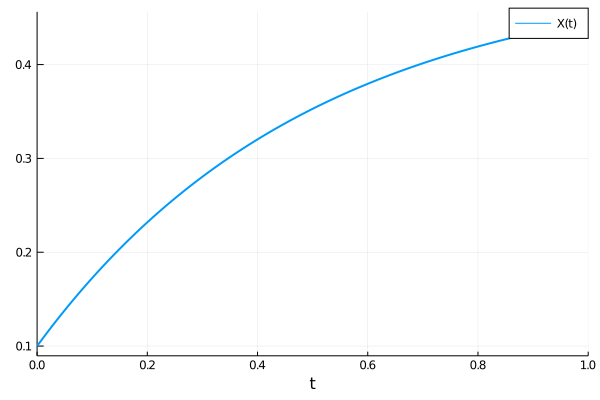
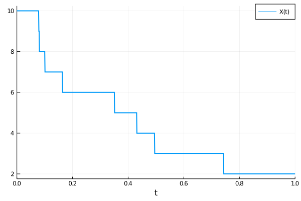

Model Simulation
Once created, a reaction network can be used as input to various problem types which can be solved by DifferentialEquations.jl, and more broadly used within SciML packages.
Deterministic simulations using ODEs
A reaction network can be used as input to an ODEProblem instead of a function, using
odeprob = ODEProblem(rn, args...; kwargs...) E.g. a model can be created and solved using:
using DiffEqBase, OrdinaryDiffEq
rn = @reaction_network begin
p, ∅ → X
d, X → ∅
end p d
p = [1.0,2.0]
u0 = [0.1]
tspan = (0.,1.)
prob = ODEProblem(rn,u0,tspan,p)
sol = solve(prob, Tsit5())Here the order of unknowns in u0 and p matches the order that species and parameters first appear within the DSL. They can also be determined by examining the ordering within the species(rn) and params(rn) vectors, or accessed more explicitly through the speciesmap(rn) and paramsmap(rn) dictionaries, which map the ModelingToolkit Variables corresponding to each species or parameter to their integer id. Note, if no parameters are given in the @reaction_network then p does not need to be provided.
We can then plot the solution using the solution plotting receipe:
using Plots
plot(sol, lw=2)
To solve for a steady-state starting from the guess u0, one can use
using SteadyStateDiffEq
prob = SteadyStateProblem(rn,u0,p)
sol = solve(prob, SSRootfind())or
prob = SteadyStateProblem(rn,u0,p)
sol = solve(prob, DynamicSS(Tsit5()))Stochastic simulations using SDEs
In a similar way an SDE can be created using
using StochasticDiffEq
sdeprob = SDEProblem(rn, args...; kwargs...)In this case the chemical Langevin equations (as derived in Gillespie, J. Chem. Phys. 2000) will be used to generate stochastic differential equations.
Stochastic simulations using discrete stochastic simulation algorithms
Instead of solving SDEs one can create a stochastic jump process model using integer copy numbers and a discrete stochastic simulation algorithm (i.e. Gillespie Method or Kinetic Monte Carlo). This can be done using:
using DiffEqJump
rn = @reaction_network begin
p, ∅ → X
d, X → ∅
end p d
p = [1.0,2.0]
u0 = [10]
tspan = (0.,1.)
discrete_prob = DiscreteProblem(rn, u0, tspan, p)
jump_prob = JumpProblem(rn, discrete_prob, Direct())
sol = solve(jump_prob, SSAStepper())Here we used Gillespie's Direct method as the underlying stochastic simulation algorithm. We get
plot(sol, lw=2)
Reaction rate laws used in simulations
In generating mathematical models from a ReactionSystem, reaction rates are treated as microscopic rates. That is, for a general mass action reaction of the form $n_1 S_1 + n_2 S_2 + \dots n_M S_M \to \dots$ with stoichiometric substrate coefficients $\{n_i\}_{i=1}^M$ and rate constant $k$, the corresponding ODE rate law is taken to be
while the jump process transition rate (i.e. propensity function) is
For example, the ODE model of the reaction $2X + 3Y \to Z$ with rate constant $k$ would be